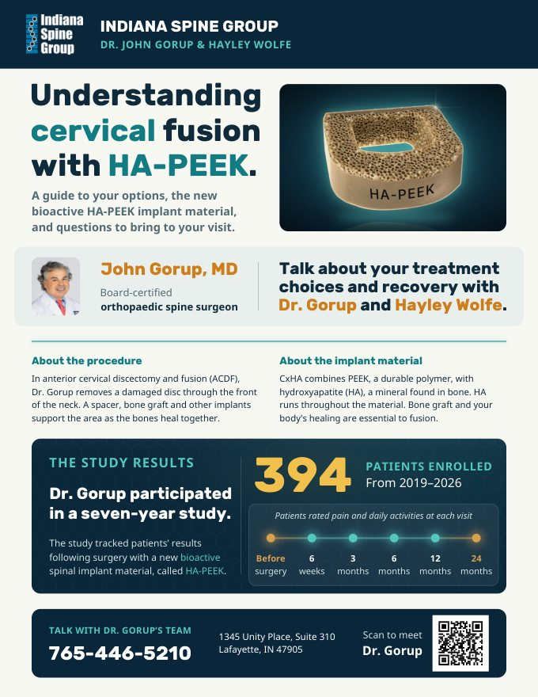
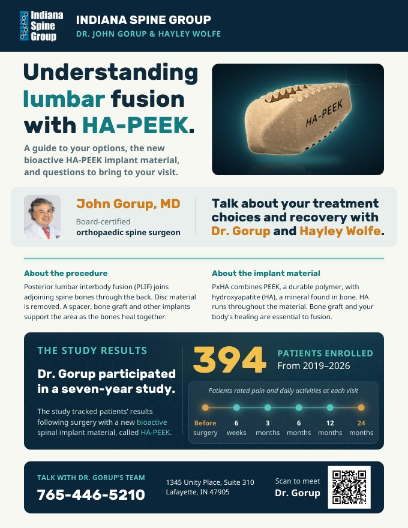

Neck · Cervical
Understanding cervical fusion with HA-PEEK
A guide to your options, the new bioactive HA-PEEK implant material, and questions to bring to your visit.
Indiana Spine Group · Dr. John Gorup
Guides for patients of Dr. Gorup and Hayley Wolfe.

John Gorup, MD
Board-certified orthopedic spine surgeon
Indiana Spine Group
Talk about your treatment choices and recovery with Dr. Gorup and Hayley Wolfe.
1345 Unity Place, Suite 310, Lafayette, IN 47905
Choose the guide for the part of your spine being treated. Each one explains the procedure, the HA-PEEK implant material, and what patients reported.

A guide to your options, the new bioactive HA-PEEK implant material, and questions to bring to your visit.

A guide to your options, the new bioactive HA-PEEK implant material, and questions to bring to your visit.
Go through the results, plan your recovery, and make a list to bring.
This guide is being prepared and is not on this page yet.
Dr. Gorup participated in a seven-year study. The study tracked patients’ results following surgery with a new bioactive spinal implant material, called HA-PEEK.
Patients rated pain and daily activities at each visit. See the study results.
Call Dr. Gorup’s team.
765-446-5210 1345 Unity Place, Suite 310More guides will be added here over time.